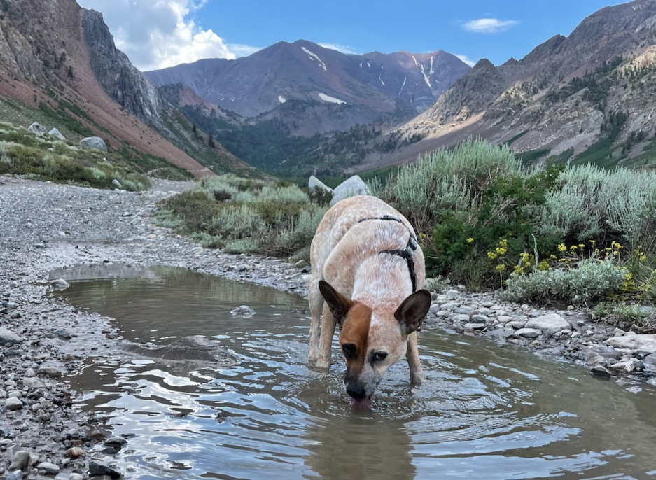
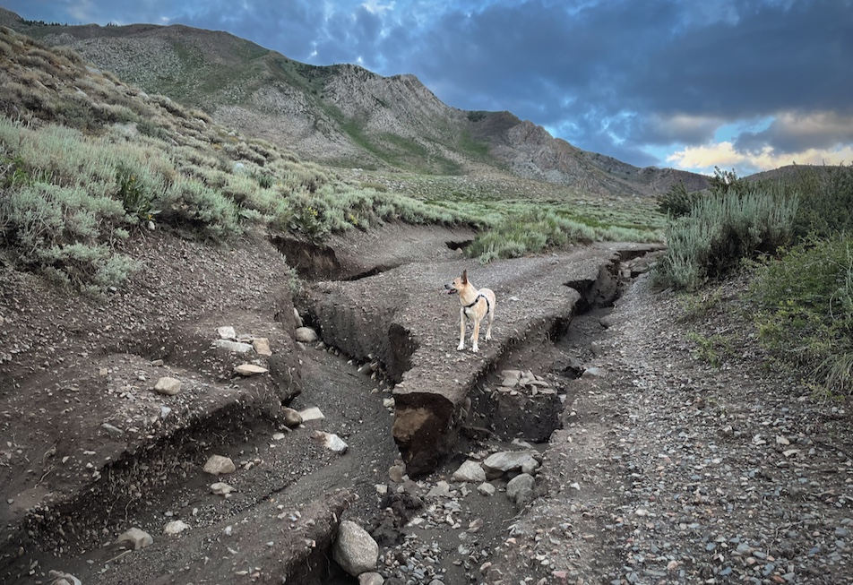
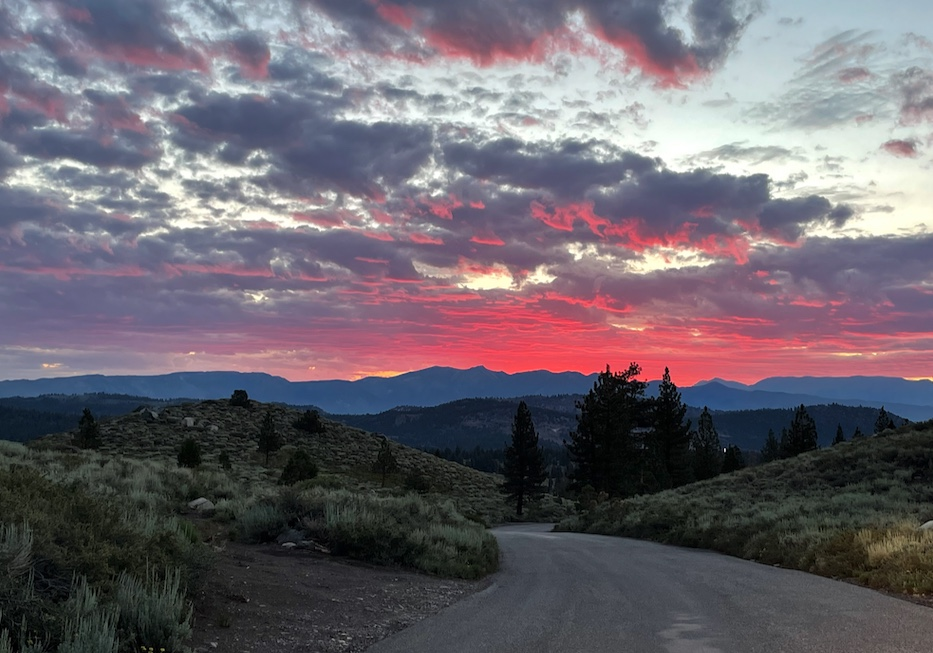
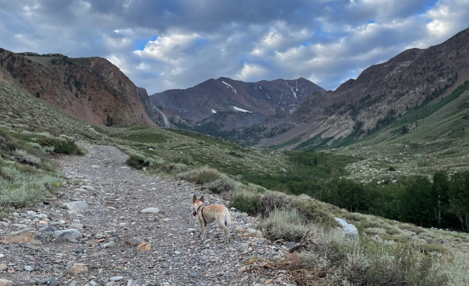
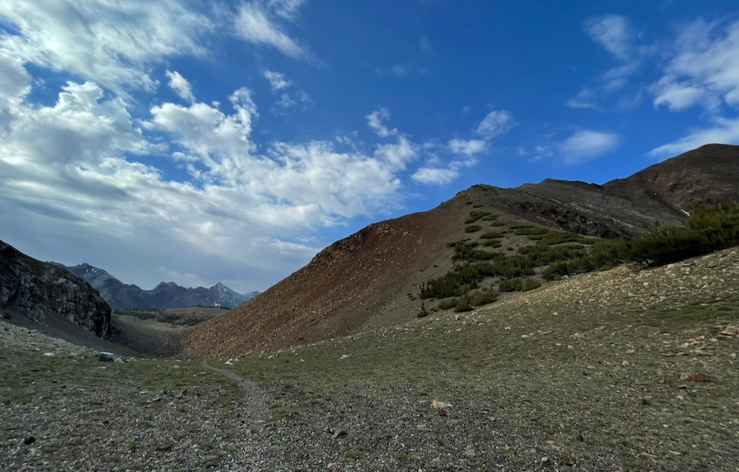
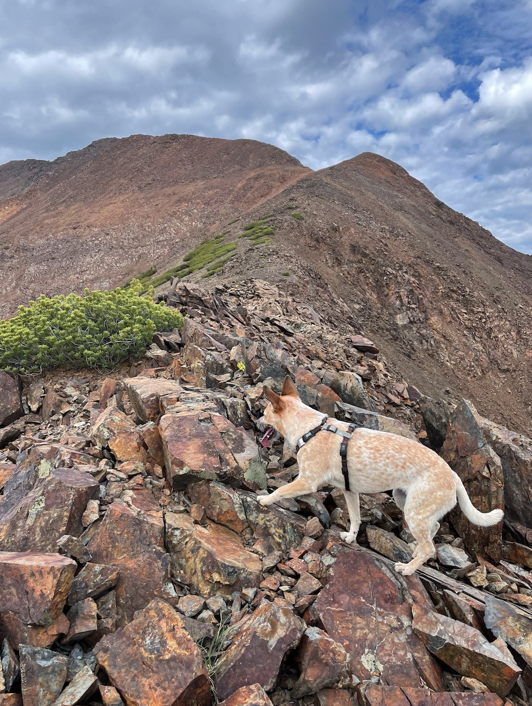
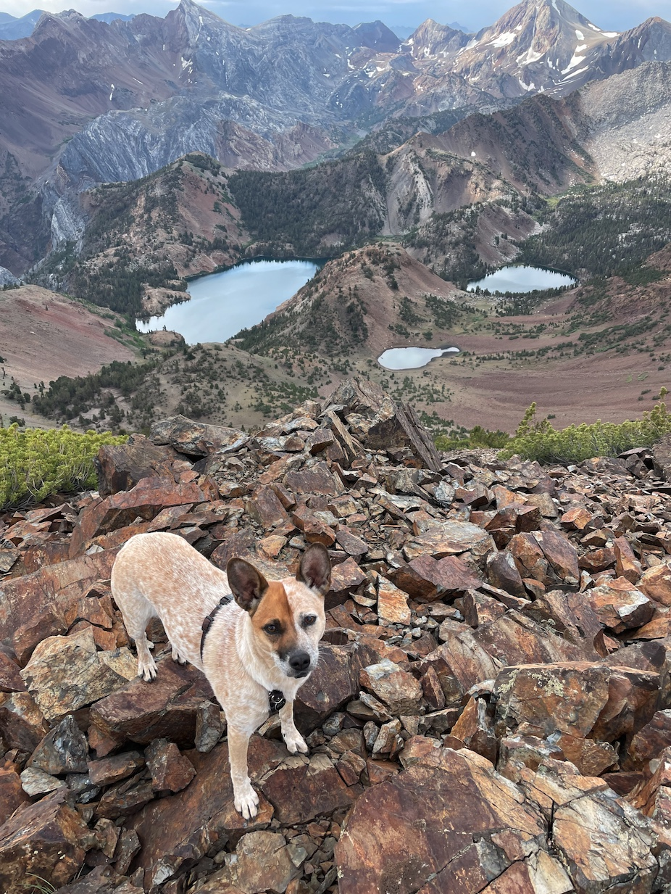
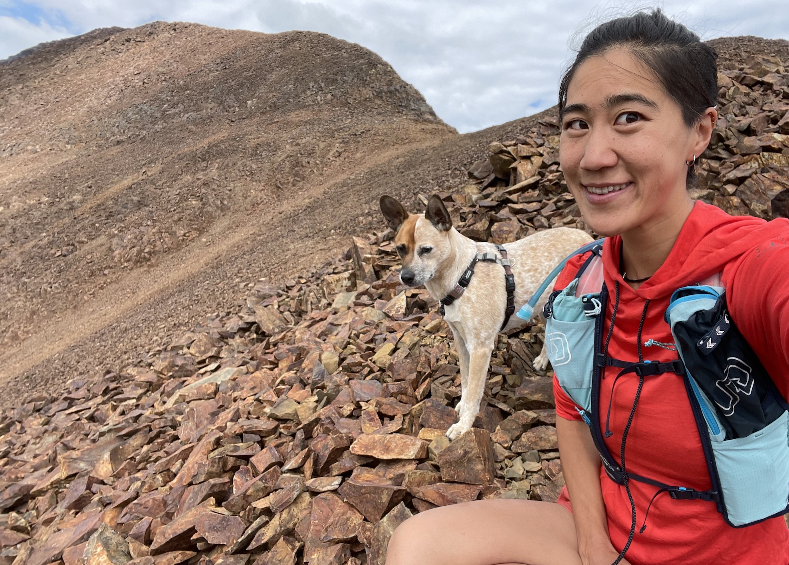
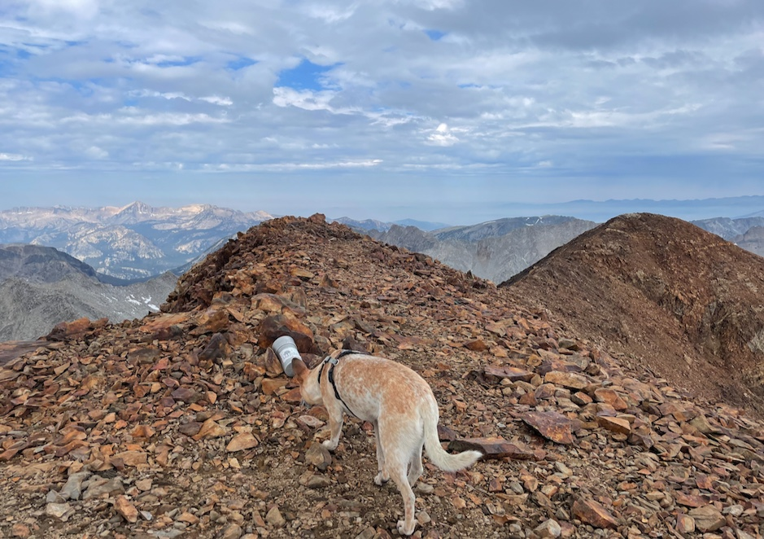
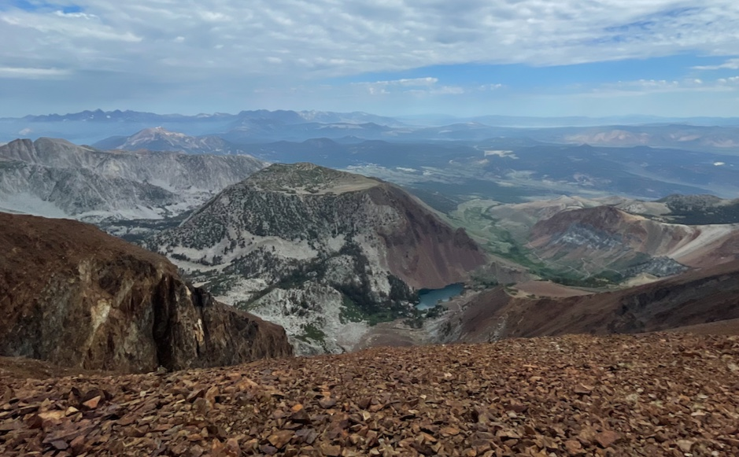

Bloody Mountain (12,552 ft)

The crux of this peak is Laurel Lakes Road, a spoopy high-clearance dirt road with large washouts that’s class 1 for dogs but class 4 for cars. There’s also not much tree cover or water, so I got an early start on an overcast day, and the clouds made the views dramatic. The cross-country is tame, though steep and exposed at times, and solidly class 2 that’s friendly for dingos!
EDIT: Laurel Lakes Road is closed as of July 24, 2021. Details here.
- trailhead: Laurel Lakes Road
- route: northeast ridge, class 2
- total distance: 14.6 miles (23.5 km). Only 5.5mi if you drive all the way up Laurel Lakes Rd
- elevation gain: 5,588 ft (1,700 m)
- time car-to-car: 6.5 hours.
- tough for dogs?: nope!
Note for humans: poles were useful on the steep parts.
Northeast ridge of Bloody Mountain. Download gpx.
>A Note on Road Conditions
EDIT: Laurel Lakes road is closed as of July 24, 2021, so expect a 14.6 mile hike. Check road conditions here.
Recent heavy rain has washed out Laurel Lakes Road 28E201 south of Sherwin Creek Road near Mammoth Lakes. This road is impassible and the public is asked to refrain driving on the road until repairs are made.
So that you are emotionally prepared, know that you might have to start your hike more than 4 miles before the trailhead listed on hiking websites. There are 9 miles round-trip of washed out driving to and from the true trailhead (9,895’) of Bloody Mountain. This isn’t an ordinary dirt road, it’s real 4x4/high clearance with 3-foot chasms and requires a capable vehicle and capable driver. My housemates did it with their truck in August 2020 and said it was an hour each way. We opted instead to walk from the very start of the road (7,320’), which took 1.5 hours each way. Between 2 hour of internally screaming in a car, or 3 hours of uneventful walking, I thought the extra hour of walking was fine :'D

>Mica’s trip report

Hi, I’m Mica, I’m a dog. I was very excited to do this long ridge walk on a nice cloudy day!
After jogging past some chasms earlier on in Laurel Lakes Road, we strolled up pebbly dirt road for another hour before turning off onto the actual Bloody Mountain trail.

Then there’s some switchbacks and winding around up to Bloody-Laurel Col, where we turn right off the trail and straight up the ridge!

At first the ridge is a bit loose and steep, but it gets more solid.

As you can see you get more than three miles of this barren volcanic talus ridgeline which lacks any shade, water, or squirrels. So I imagine you cook like bacon on a sunny, windless day.

Looking SE over the ridge. Nice views of Lake Genevieve (left), Mount Baldwin (left), and Red Slate Mountain (right), which I’ve climbed!


The clouds made the views dramatic, but we didn’t stay long at the top as a few rain drops fell as a reminder that there were afternoon thunderstorms in the forecast.

Looking northwest to the strangely shaped Lost World Peak, with Laurel Lakes at the base. You can see Laurel Lakes Road cut into the slopes on the far right (enhance)
{kind=link}
We scuried back down the ridge without resting, getting back to the car at 12:25pm after 6.5 hours of hiking. It didn’t pour rain until we already drove home and ate big lunches. That was my 10th SPS summit!
comments
No comments at the moment. Hey, you could write one \o/